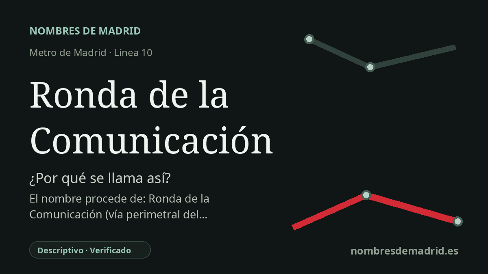

Publicado el · Investigación de Nombres de Madrid · Cómo verificamos cada origen · 8 fuentes consultadas
Respuesta rápida
Ronda de la Comunicación toma su nombre de la vía situada junto al campus de Telefónica en Las Tablas. El nombre alude al sector de las comunicaciones, no a una persona ni a un antiguo pueblo.
La historia del nombre
Ronda de la Comunicación no lleva el nombre de un personaje histórico, un santo, una batalla o un antiguo núcleo de población. Su origen inmediato es la vía llamada Ronda de la Comunicación, junto al gran campus de Telefónica en Las Tablas, dentro del distrito de Fuencarral-El Pardo. En sentido estricto, la estación adopta el nombre de la calle a la que da servicio.
La capa de fondo es el paisaje corporativo que rodea esa vía. Telefónica desarrolló allí el campus denominado Distrito C, entendido también como distrito de las comunicaciones, y más tarde conocido como Distrito Telefónica. La palabra "comunicación" no es casual: remite directamente a la empresa de telecomunicaciones y a la idea de reunir en un mismo campus oficinas, trabajadores, servicios y redes del grupo.
La cronología pertenece a la rápida expansión ferroviaria hacia el norte de Madrid en los años 2000. La Comunidad de Madrid describe MetroNorte como la prolongación de la línea 10 que une Tres Olivos, Fuencarral, Las Tablas, Alcobendas y San Sebastián de los Reyes, con Ronda de la Comunicación entre sus once nuevas estaciones. La memoria anual de Telefónica de 2006 señala que, en abril de 2007, ya se había inaugurado la nueva estación subterránea y que la compañía había invertido 14 millones de euros en ella.
La estación también permite leer una parte del urbanismo de Distrito C. El campus de Rafael de la Hoz se concibió con plazas, atrio, zonas ajardinadas, agua, fachadas de vidrio y una estructura fuertemente peatonal. Las descripciones arquitectónicas del proyecto subrayan que la estación pública de metro ayudaba a hacer funcional el campus y a abrirlo a la ciudad, no solo a cerrarlo como recinto de oficinas.
La evidencia es sólida para el origen básico: el nombre de Metro sigue el nombre de la vía, y esa vía está inseparablemente ligada al campus de Telefónica y a su tema de comunicaciones. Conviene, no obstante, matizar algunos detalles. Las fuentes oscilan entre el 23 y el 26 de abril de 2007 para la puesta en servicio o apertura al público, y una fuente de Telefónica usó la variante "Ronda de Comunicaciones"; no constan pruebas de que fuera un nombre oficial anterior de la estación.